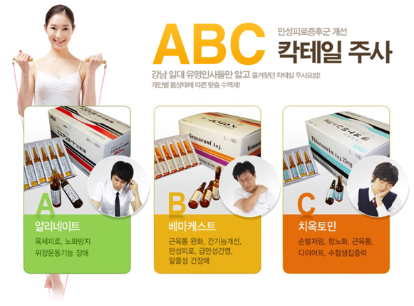
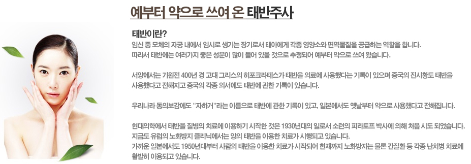

영양수액클리닉
기운이 없으세요? 빠른 회복을 원하신다구요?
- 체력증진 및 혈액순환에는
아미노산 주사
- 피로회복 및 통증감소에는
메가 비타민 주사
- 강력한 피로회복 및 면역력 증가,
간 기능 개선 및 노화방지에는
스페셜 칵테일 주사
스페셜 칵테일 주사
갱년기 자가진단하고, 스페셜 칵테일주사로 치료하자!
갱년기 자가진단 체크
- 얼굴이 갑자기 달아오르곤 한다.
- 키가 다소 감소했다.
- 손발이 저리거나 쑤신다.
- 피부나 모발이 건조하다.
- 우울한 느낌이 들 때가 많다.
- 집중력이 떨어진다.
- 잠을 잘 못 이룬다.
- 쉽게 피로감을 느낀다.
- 땀을 많이 흘린다.
- 가슴이 두근두근거린다.
- 갱년기 자가진단 항목 중 해당하는 사항이 5가지 이상 인 경우, 의사선생님과 상담을 통해 도움 받거나 치료를 받아야 합니다.
- 단, 해당되는 증상이 5개 미만일지라도 세부증상들 중 특정 증상이 심한 경우는 반드시 전문가와의 상담을 통해 적절한 치료를 받아야 합니다.
- ABC(스페셜) 칵테일 주사요법으로 갱년기의 주요증상을 개선할 수 있습니다.

태반주사

태반주사 효과
- 01. 피부 개선효과
- 태반주사는 세포분열을 활성화시키고 피부의 신진대사를 축진시켜 피부에 침착된 색소를 제거하고 멜라닌 생성을 억제하여
기미 제거에 효과적이며 피부미백 및 비푸톤 개선에 효과적입니다.
- 02. 황노화작용
- 활성산소는 체내에서 유해물질을 없애주는 역할을 하지만 지나치게 많이 생성되면 정상세포를 공격하게되어 노화의 원인이
되는데 태반주사는 이러한 활성산소를 제거해주어 우리 몸의 노화를 막아주는데 도움이 됩니다.
- 03. 갱년기 장애치료
- 갱년기가 되면 여성호르몬 분비가 급격히 저하되면서 신체리듬의 불균형 증상이 나타나게 되는데, 태반주사는 면역성분과
세포증식인자 등에 작용하여 자연 치유력을 황상, 갱년기 치료에 효과적입니다.
- 04. 피로회복
- 헐류량이 중가하면 체내 영양분 공급이 원할해지고 노페물 배설도 축진되어 활력중진에 도움이 됩니다.
태반주사는 이러한 체내 장기의 기능을 회복시켜주고 쌀인 피로를 회복시켜줍니다.
- 05. 간기능 회복
- 태반주사는 각종 장기의 기능, 특히 간기능을 회복시켜 누적피로를 단시간에 해소시키며 또한 간 기능이 저하되는 만성간염,
간경화, 간암 등의 만성질환자의 간 기능 개선에 좋은 효과를 보입니다.